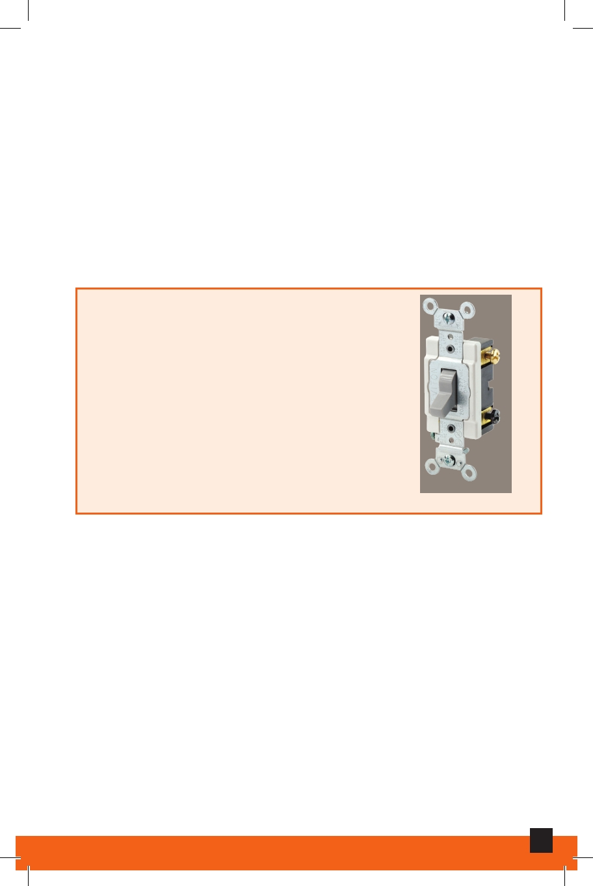

Resistance
Opposition to the flow of electricity, measured in Ohms.
Short Circuit
When current seeks to return to a path other than the
neutral wire.
Three-Way Switch
Switches that have three screw
terminals (in addition to the ground
terminal). They operate lights from two
locations and are used in pairs.
Three-Way Switch
Voltage (or Volts)
A measurement of electricity in terms of pressure.
Wattage (or Watts)
A measurement of electrical power in terms of total energy
consumed. Watts can be calculated by multiplying the
voltage times the amps.
17
Electrical Maintenance and Repair